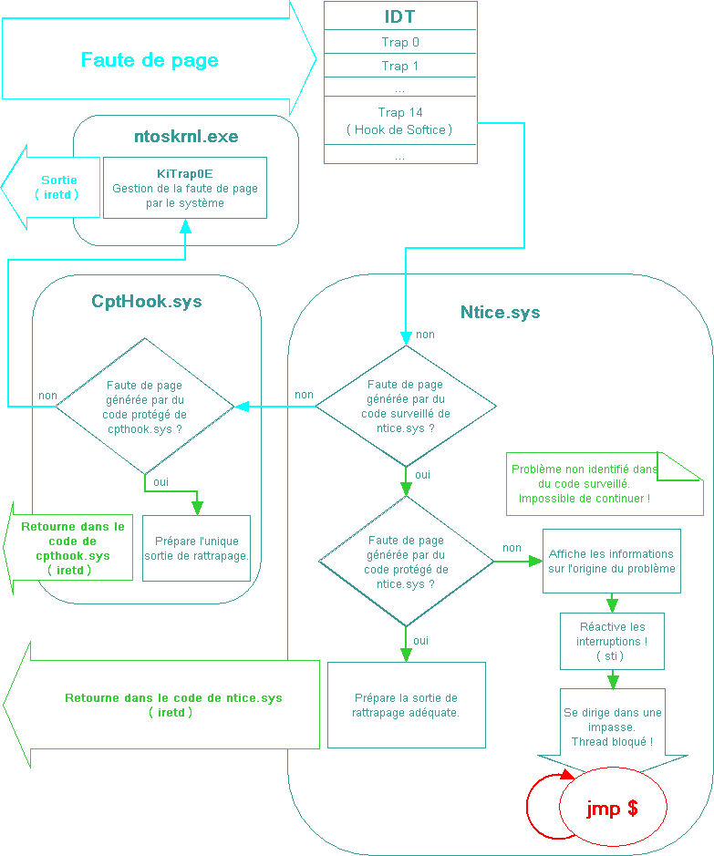

cible : Driver Studio verison 3.2
Système : Windows 2000 SP4/Windows XP PRO SP2
Préambule
Softice est un outil très
puissant qui permet de directement déboguer
en mode noyau la machine hôte. Pour arriver
à cette prouesse, Softice doit se fondre dans
le système afin de fonctionner avec lui et
de pouvoir prendre le contrôle total lorsque
cela le demande.
Etat des lieux
Au delà des niveaux de priorité
des threads, il existe une couche plus basse appelé
niveau de requête d'interruption (IRQL - Interrupt
Request Level). L'IRQL se situe au niveau du système
et permet la gestion des priorités des interruptions.
Tous les threads utilisateurs ne peuvent fonctionner
qu'à un niveau IRQL égal à 0
(PASSIVE_LEVEL). Mais les threads en mode noyau n'ont
pas cette restriction et peuvent modifier leur IRQL
suivant les circonstances.
En temps normal avec un IRQL égal
à 0 (PASSIVE_LEVEL) ou 1 (APC_LEVEL), lorsqu'une
page n'est pas en mémoire physique et demande
à être accédée, une interruption
14 (0xE) est déclanchée. C'est alors
la routine KiTrap0E du système qui s'occupe
de mapper la page en mémoire physique et de
laisser la tâche interrompue reprendre son cours.
Mais à partir du niveau IRQL
égal à 2 (DISPATCH_LEVEL) et supérieur,
une faute de page ne peut pas être gérée
par le système. C'est une restriction due aux
mécanismes internes de Windows.
Dans le cas d'un IRQL supérieur ou égal
à 2, l'accès à la mémoire
ne peut se faire que sur des pages résidant
en mémoire physique. Sans quoi, l'interruption
14 générée par une faute de page
mène tout droit à un effondrement du
système.
Softice fonctionne au niveau noyau.
Il peut donc être amené à interagir
sur des flux de code fonctionnant à n'importe
quel niveau d'IRQL. Et dans cet environnement là,
l'accès à la mémoire devient
très délicat.
Pour garantir une stabilité
à Softice, il a été conçu
avec un mécanisme de rattrapage de fautes de
page.
Le principe est simple. Lorsqu'une
faute de page intervient, Softice vérifie,
avant le système, l'origine du code ayant générée
l'interruption 14. Et suivant certains cas prédéfinis
à la compilation, Softice peut être amené
à modifier le retour de l'interruption. Ceci
lui permet de rattraper des fautes de pages générées
dans ses propres portions de code identifiées
comme à risque.
Pour pouvoir contrôler les
fautes de page, Softice hooke, lors de son initialisation,
l'interruption 14 directement dans la table des descripteurs
d'interruption (IDT) de chaque processeur présent.
A partir de ce moment là, Softice vérifie
l'origine de toutes les fautes de page et agit en
conséquent.
Voici un schéma simplifié
qui décrit le fonctionnement de ce mécanisme
installé par Softice :

A l'origine, le descripteur d'interruption
14 pointe directement sur la routine KiTrap0E de ntoskrnl.exe.
Le schéma ci-dessus montre le chemin que peut
parcourir le flux de code lorsque Softice est installé
et actif.
Nous pouvons aussi apercevoir la
présence d'un autre driver : CptHook.sys (Capitain
Hook ;). Ce driver fait parti de Softice et est toujours
actif même lorsque Softice (NTice.sys) ne l'est
pas. CptHook.sys contient aussi un filtre basique
permettant de rattraper les fautes de page de certaines
de ses propres routines.
Mais le plus important dans ce schéma
est la présence d'une impasse dans NTice.sys.
Cette impasse a sûrement été mise
en place pour prévenir de tout problème
grave dans NTice.sys, permettant ainsi d'en informer
les développeurs. Malheureusement, un problème
au niveau de l'identification du code ayant provoqué
la faute de page permet de faire un déni de
service à partir d'un simple programme utilisateur.
Ce déni est sans appel et mène tout
droit à un effondrement du système (BSOD).
Description
Lorsqu'une faute de page se produit,
le processeur enregistre dans la pile système
les informations permettant à l'interruption
de reprendre son cours et détourne le thread
vers la routine de gestion d'interruption appropriée.
Pour l'interruption 14, les informations
enregistrées sur la pile commencent toujours
par un code d'erreur, le registre EIP, le registre
de segment CS et le registre EFlag. Et si le code
ayant généré la faute de page
vient d'un niveau de privilège égal
à 3 alors le registre de pile ESP et de segment
de pile SS sont rajoutés à la suite.
Lorsque l'on étudie en profondeur
le code de Softice on peut s'apercevoir que seul le
registre EIP que l'on trouve dans la pile est utilisé
pour identifier l'origine du code ayant généré
la faute de page. Ceci est une erreur d'appréciation
et nous allons voir comment il est possible de l'exploiter.
Mais avant d'aller plus loin, établissons
un résumé des points importants des
mécanismes décrits dans le schéma.
Pour ce qui est de NTice.sys
:
La grosse différence à
noter entre les 2 modules est que NTice.sys surveille
en plus du code qui ne peut pas être rattrapé.
Et s'il y a un problème dans ce code là,
il se dirige tout droit dans l'impasse.
Tout ceci peut paraître tout
à fait logique mais c'est oublier qu'un programme
utilisateur peut très bien essayer d'exécuter
du code dans la mémoire du système.
Ce code ne pourra bien sûr pas être exécuté
mais il aura pour effet de générer
une faute de page !
En suivant cette idée et au
vu de ce qui vient d'être exposé, il
est tout à fait possible à un programme
utilisateur de faire croire à NTice.sys qu'une
faute de page vient de se produire dans son propre
code et donc de le forcer à se diriger dans
l'impasse. Et un thread (venant du mode utilisateur)
qui reste bloqué dans une routine d'interruption
avec les interruptions de réactivées
(Bit IF du registre EFlags à 1) est sans appel:
Effondrement du système
(Message : IRQL_NOT_LESS_OR_EQUAL).
Preuve du Concept
;) (POC)
La manière la plus simple pour exploiter ce
problème consiste à exécuter
un "scanne en exécution" sur toute
la mémoire système. Voici un petit exemple
:
| start proc near |
|
|
push offset
SEH
push large dword ptr fs:0
mov large fs:0, esp
xor eax, eax
sub eax, 100h
|
; pas du scanne
|
| Loop_scan_with_eip:
|
| |
jmp
eax |
; tentative d'exécution
de
; code en mémoire système |
| Continue: |
| |
sub eax, 100h
cmp eax, 80000000h
jnb short Loop_scan_with_eip
mov esp, large fs:0
pop large dword ptr fs:0
add esp, 4
retn |
; pas du scanne
; sortie |
| start endp |
| |
| SEH proc near
|
| |
lea eax, [esp+4]
mov eax, [eax+8]
mov dword ptr [eax+0B8h], offset Continue
mov eax, 0
retn |
; except_handler
; except_handler.ContextRecord
; CONTEXT.Eip
; ExceptionContinueExecution |
| SEH endp |
|
|
Ce petit programme est pensé
pour un système 32 Bits avec 2 Go de mémoire
système (0x80000000-0xFFFFFFFF). Il essaye
tout simplement d'exécuter du code dans la
mémoire du système tous les 0x100 octets.
La routine SEH s'occupe de rattraper les violations
d'accès générées par le
"jmp eax" et de faire en sorte que le scanne
puisse continuer son cours. Comme nous avons pu le
voir, les violations d'accès perçues
ici par le programme utilisateur viennent directement
de fautes de page du point de vu du système.
Ce code est très primaire
et le scanne de toute la mémoire du système
peut s'avérer être assez long. Mais il
a l'avantage de ne pas utiliser d'API. Le pas du scanne
permet de l'optimiser un peu. Mais ce pas ne doit
pas être trop grand au risque de passer à
côté du code recherché. Nous verrons
plus loin un moyen d'optimiser le scanne afin d'obtenir
l'effondrement du système quasi instantanément.
Mais avant cela, il devient intéressant
d'analyser les différents cas de figure que
peut générer ce programme. Nous avons
en fait 3 situations importantes :
Sécurité
?
Le déni de service avec effondrement
du système ne remet en rien la sécurité
de la machine. A part perdre quelques informations
non sauvegardées lors du crash, on ne risque
pas grand chose.
Par contre, un point plus inquiétant
est de pouvoir, à partir du mode utilisateur,
forcer NTice.sys ou CptHook.sys à rediriger
une tâche vers une de leurs propres routines
de rattrapage. Certaines de ces routines ne comportent
que 2 instructions assembleurs, "stc" et
"retn". En réussissant à forcer
Softice à placer, avant de rediriger la tâche,
le registre CS (dans la pile) à un niveau de
privilège noyau, il deviendrait tout à
fait possible d'exécuter du code à un
niveau de privilège maximum directement dans
la pile utilisateur. Je crains que l'opération
soit difficilement réalisable. Mais la routine
"NticeTrap0E" est une routine complexe qui
peut interagir sur beaucoup de chose suivant les situations.
Et il y a sûrement beaucoup d'autres façons
d'aborder ce problème.
Quoi qu'il en soit, le fait est qu'il
est possible d'influencer le flux du code en mode
noyau en trompant Softice sur l'origine d'une faute
de page. Et rien que ceci place cette faille de sécurité
à un niveau que je qualifierais de potentiellement
dangereux.